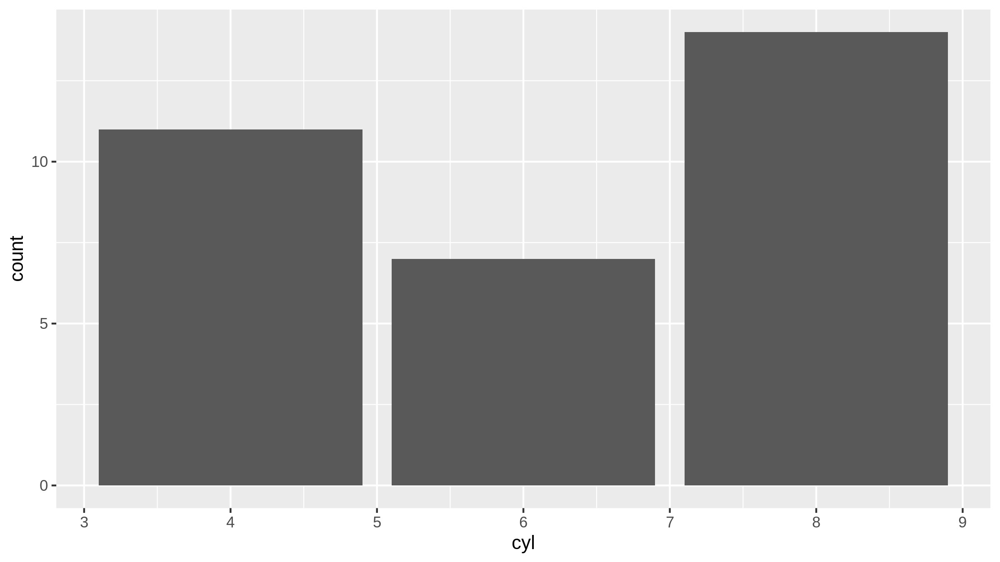
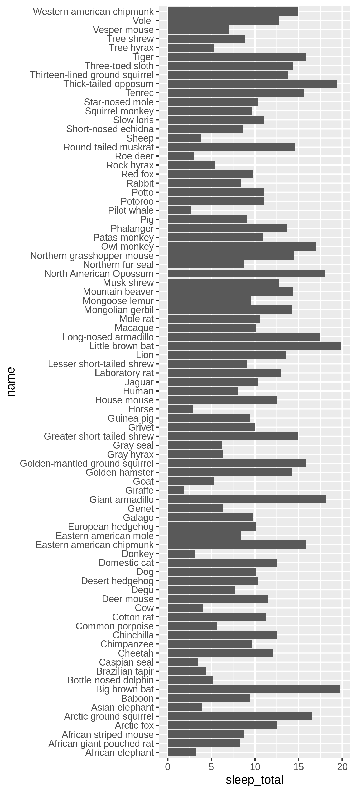
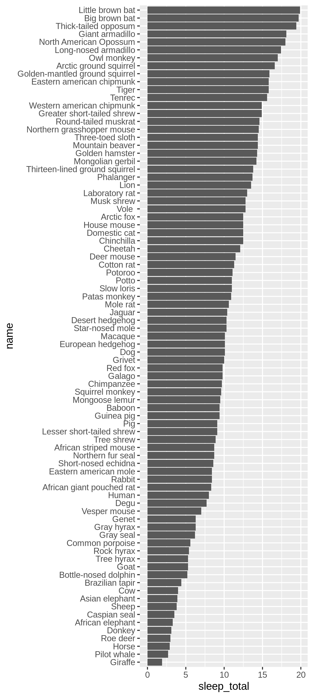

10 Faktoren
R kennt diskrete Daten in zwei Varianten.
- Diskrete Daten als Abfolge von Werten in einem Vektor.
- Diskrete Daten als Faktor.
Base-R-Funktionen, wie read.csv() oder data.frame(), erstellen automatisch Faktoren, wenn diskrete Daten erkannt werden. Diese Daten werden immer dann erkannt, wenn es sich nicht um Zahlenwerte handelt. Dieser Automatismus ist nicht immer erwünscht, weil nicht alle Daten automatisch Faktoren sind, wenn die Werte keine Zahlen sind, und weil ordinalskalierte Daten oft mit Zahlen erhoben werden. Deshalb lesen die modernen Funktionen der tidyverse-Bibliothek Daten grundsätzlich als Vektoren atomarer Datentypen ein. So können wir entscheiden, ob ein Vektor als Faktor behandelt werden soll oder nicht.
Wir erkennen Faktoren in Stichprobenobjekten von R am Symbol <fct> für den Datentyp und können mit der Funktion is.factor() prüfen, ob ein Vektor ein Faktor ist. In R ist ein Faktor ein komplexer Datentyp, der neben den Werten auch den geordneten Wertebereich speichert. Dieser Wertebereich wird in R als levels bezeichnet. Der Wertebereich eines Faktors bildet also die “Ausprägungen” bzw. “Ebenen” (engl. levels) der diskreten Daten ab.
10.1 Verwendung von Faktoren in R
Neben der Bedeutung für die Empirie sind Faktoren in R auch für die Darstellung von Daten von Bedeutung. Dabei wird die Ordnung der Faktorstufen für die Anordnung von Ergebnissen verwendet, die mit Hilfe eines Faktors berechnet wurden. Diese Ordnung wird von ggplot() und für die Sortierung der Ergebnisse gruppierter Daten verwendet. Die Verwendung von Faktoren für solche Aufgaben hat den Vorteil, dass die Reihenfolge der Datensätze nicht verändert werden muss.
Die folgenden Beispiele verwenden die Stichprobe digitales_umfeld.csv
digitales_umfeld = read_delim("digitales_umfeld.csv")Wenn wir zum Beispiel die Anzahl der Mobilgerätetypen bestimmen möchten, dann können wir naiv vorgehen:
digitales_umfeld |>
group_by(mobilgeraet) |>
count()| mobilgeraet <chr> |
n <int> |
|---|---|
| Android Smartphone | 64 |
| iPhone | 69 |
| Mobiltelefon | 2 |
Wenn wir die häufigste Nennung eines Mobilgeräts als erstes in dieser Tabelle stehen haben möchten, dann bietet sich die Verwendung eines Faktors mit organisierten Faktorstufen an.
digitales_umfeld |>
mutate(
mobilgeraet = mobilgeraet |> as_factor() |> fct_infreq()
) |>
group_by(mobilgeraet) |>
count()| mobilgeraet <chr> |
n <int> |
|---|---|
| iPhone | 69 |
| Android Smartphone | 64 |
| Mobiltelefon | 2 |
10.2 Erstellen von Faktoren
Faktoren sind ein zentraler Bestandteil von R. Ohne die tidyverse Bibliothek kann ein Faktor mittels der Funktion factor() erstellt werden.
Gegeben sei zum Beispiel der Vektor mit den Namen der Studiengänge des ZHAW Departements LSFM:
Studiengaenge = c(
"Chemie",
"Umweltingenieurwesen",
"Facility Management",
"Biotechnologie",
"Lebensmitteltechnology",
"Applied Digital Life Sciences",
"Biomedical Labordiagnostik"
)Dieser Vektor enthält nur Zeichenketten und ist daher ein Zeichenkettenvektor. Der Funktionsaufruf is.factor(Studiengaenge) gibt entsprechend FALSE als Ergebnis zurück.
Dieser Vektor kann einfach in einen Faktor umgewandelt werden.
stgFaktor = Studiengaenge |> factor()
stgFaktor- Chemie
- Umweltingenieurwesen
- Facility Management
- Biotechnologie
- Lebensmitteltechnology
- Applied Digital Life Sciences
- Biomedical Labordiagnostik
Das Ergebnis unterscheidet sich nicht wesentlich vom ursprünglichen Vektor. Wir können mit dem Aufruf is.factor(stgFaktor) überprüfen, ob es sich nun um einen Faktor handelt. Wir erhalten nun TRUE als Ergebnis.
Wir können nun mit der Funktion levels() die Faktorstufen abfragen. Diese Funktion gibt uns einen Vektor mit allen Faktorstufen zurück.
stgFaktor |>
levels()- Applied Digital Life Sciences
- Biomedical Labordiagnostik
- Biotechnologie
- Chemie
- Facility Management
- Lebensmitteltechnology
- Umweltingenieurwesen
Dieses Ergebnis ist etwas überraschend, weil die Reihenfolge der Faktorstufen nicht mehr mit der Reihenfolge der Werte in unserem Vektor übereinstimmt. Wir sehen am Ergebnis, dass die Funktion factor() die Annahme macht, dass unsere Faktorstufen alphabetisch sortiert sind. Leider ist das oft nicht der Fall und gerade bei unsortierten Faktoren müssen die Werte Präsentationen oft neu arrangiert werden. Deshalb hat sich die Konvention eingebürgert, für die initiale Reihenfolge von Faktorstufen das erste Auftreten des jeweiligen Werts zu wählen. Dazu müssen wir der factor()-Funktion auch die Faktorstufen mitgeben.
stgFaktor = Studiengaenge |>
factor(
# erzeugt alle Faktorstufen in der Reihenfolge des ersten Auftretens,
# selbst wenn Werte doppelt auftreten.
Studiengaenge |> unique()
)Nun können wir mit der levels()-Funktion die Reihenfolge der Faktorstufen überprüfen.
Weil diese Vorgehensweise eine Konvention moderner R-Programmierung ist, gibt es eine Funktion, die uns diesen Schritt kompakter schreiben lässt. Dazu verwenden wir die Funktion as_factor().
stgFaktor = Studiengaenge |>
as_factor()Wenn wir einzelne Vektoren in einem Stichprobenobjekt in Faktoren umwandeln wollen, dann führen wir eine Umwandlung mit mutate() durch.
Wir wollen nur den Vektor mobilgeraet, geschlecht und digitalisiert in Faktoren umwandeln.
digitales_umfeld |>
mutate(
mobilgeraet = mobilgeraet |> as_factor(),
geschlecht = geschlecht |> as_factor(),
digitalisiert = digitalisiert |> as_factor()
) -> duFaktorisiert
duFaktorisiert| geschlecht <fct> |
alter <dbl> |
tage <dbl> |
monate <dbl> |
geburtsjahr <dbl> |
digitalisiert <fct> |
mobilgeraet <fct> |
|---|---|---|---|---|---|---|
| Männlich | 23 | 8474 | 278 | 1998 | 3 | iPhone |
| Männlich | 27 | 9970 | 327 | 1994 | 6 | Android Smartphone |
| Männlich | 27 | 10131 | 332 | 1994 | 6 | iPhone |
| Weiblich | 25 | 9253 | 304 | 1996 | 5 | Android Smartphone |
| Männlich | 25 | 9363 | 307 | 1996 | 6 | iPhone |
| Andere | 23 | 8750 | 287 | 1997 | 2 | iPhone |
| … | … | … | … | … | … | … |
Wir sehen nun, dass die faktorisierten Vektoren nun den Datentyp Factor (fct) haben.
10.3 forcats - Faktoren leicht gemacht
Die Arbeit mit Faktoren ist in Base-R nicht immer ganz einfach. Wollschläger (2017, Kap. 2.6) zeigt detailliert, wie Faktoren mit R erstellt und manipuliert werden. Das ist zum Teil recht komplex und aufwändig. Zum Glück versteckt die forcats-Bibliothek die Komplexität von R-Faktoren vor uns, sodass wir präzise ausdrücken können, wie wir die interne Struktur unserer diskreten Daten organisieren möchten.
Die Funktionen der forcats-Bibliothek sind verfügbar, sobald Sie die tidyverse-Bibliothek eingebunden haben.
Die forcats-Bibliothek bietet neun Funktionen zum Umorganisieren von Faktoren.
10.4 Organisieren von Faktorstufen
Die zentrale Funktion in R von Faktorstufen ist ihre Bedeutung für die Ordnung der Werte des jeweiligen Faktors. Indem wir die Faktorstufen organisieren, können wir die Werte des Vektors strukturieren, ohne ihre Reihenfolge zu ändern.
Für die Organisation von Faktorstufen gibt es vier häufig vorkommende Aufgaben:
- Organisation entlang einer vordefinierten Reihenfolge (Skala),
- Organisation entlang der internen Organisation eines Datentyps,
- Organisation entlang der Häufigkeit eines Werts,
- Organisation entlang des Auftretens in der Stichprobe.
Die erste Aufgabe tritt immer ein, wenn wir mit etablierten Methoden arbeiten. In diesem Fall ist die Reihenfolge der Faktorstufen bereits bekannt. In solchen Fällen sprechen wir von der Zuordnung einer Skala. Für solche Zuordnungen verwenden wir die Funktion fct_relevel().
Zum Beispiel wollen wir die Faktorstufen in der Stichprobe digitales Umfeld nach einer externen Vorgabe festlegen, sodass die folgende “Ladies-First” Reihenfolge gilt:
geschlecht_faktorstufen = c( "Weiblich", "Andere", "Keine Angabe", "Männlich" )Nun können wir den Faktor geschlecht entsprechend umformen.
duFaktorisiert |>
mutate(
geschlecht = geschlecht |> fct_relevel( geschlecht_faktorstufen )
) -> digitales_umfeld_externe_skalaWenn Sie mit fct_relevel() eine vorgegebene Skala als Vektor übergeben, die nicht vollständig in der Stichprobe abgedeckt wurde, dann erhalten Sie eine kryptische Warnung, die auf Unknown levels in `f`: endet. Diese Warnung können Sie ignorieren. R fügt die fehlenden Faktorstufen nicht ein, behält aber deren innere Organisation bei.
Die zweite Aufgabe ist die Organisation der Faktorstufen nach der internen Organisation des jeweiligen Datentyps. Liegen die Werte als Zahlen vor, dann werden die Faktorstufen entsprechend des jeweiligen Nennwerts sortiert. Liegen die Werte als Zeichenketten vor, dann werden die Faktorstufen alphabetisch sortiert. Diese Organisation entspricht der Vorgehensweise der meisten Base-R Funktionen. Falls unsere Daten als Zahlen (oder Wahrheitswerte) vorliegen, können wir für diese Vorgehensweise die Funktion fct_inseq() verwenden.
duFaktorisiert |>
mutate(
digitalisiert = digitalisiert |> fct_inseq()
) -> duFaktorisiert_sequenziellIm Fall von Zeichenketten als Faktorstufen, müssen wir die bestehenden Faktorstufen selbst umsortieren und dann als neue Vorgabe mit fct_relevel() übergeben. Im folgenden Beispiel ist das alphabetische Sortieren der Faktorstufen eine eingebettete Funktionskette.
duFaktorisiert |>
mutate(
mobilgeraet = mobilgeraet |> fct_relevel( mobilgeraet |> levels() |> sort() )
) -> duFaktorisiert_alphabetischDie dritte Aufgabe ist die Organisation nach der Häufigkeit eines Werts in einer Stichprobe. Diese Vorgehensweise ist besonders für nominalskalierte Daten interessant, um über die Häufigkeiten die Reihenfolge der Faktorstufen festzulegen. Hierbei hilft die Funktion fct_infreq(). Die Faktorstufen werden so den Häufigkeiten entsprechend in der Stichprobe ab- bzw. aufsteigend organisiert.
duFaktorisiert |> mutate(
mobilgeraet = mobilgeraet |> fct_infreq()
) -> duFaktorisiert_frequenzBei der vierten Aufgabe sollen die Faktorstufen entlang der Reihenfolge des ersten Auftretens in der Stichprobe erfolgen. Dieser Fall tritt meistens dann ein, wenn die Faktorstufen umorganisiert wurden und wieder in die ursprüngliche Reihenfolge gebracht werden müssen. Die Funktion fct_inorder() übernimmt diese Aufgabe.
duFaktorisiert |> mutate(
mobilgeraet = mobilgeraet |> fct_inorder()
) -> duFaktorisiert_reihenfolge10.4.1 Faktorstufen an den Werten eines anderen Vektors ausrichten
Mit der Funktion fct_reorder() können wir die Faktorstufen eines Vektors über die Werte eines anderen Vektors organisieren. Solche Ausrichtungen sind oft nach Aggregationen sinnvoll, wenn für jede Faktorstufe eines nominalskalierten Vektors genau ein Wert in einem anderen Vektor festliegt. Dabei muss aber immer genau ein Wert einer Faktorstufe entsprechen. Dabei wird für die Faktorstufen eine absteigende bzw. (optional) aufsteigende Reihenfolge des Referenzvektors angenommen.
msleep |>
mutate(
name = name |> as_factor() |> fct_reorder(sleep_total)
)Ähnlich wie beim Gruppieren, ändert sich die sichtbare Struktur des Stichprobenobjekts nicht. Es wird lediglich die interne Reihenfolge der Faktorstufen angepasst. Solche Schritte sind für aussagekräftige Visualisierungen sehr hilfreich.
10.5 Faktorstufen und Visualisierung
Faktoren erleichtern das Veranschaulichen von Daten. Der grosse Vorteil bei der Verwendung von Faktoren ist, dass sich der Code für die Visualisierung nicht ändert. Mit Hilfe der Faktorstufen geben wir ggplot Hinweise über die Struktur der Werte in einem Vektor. Dadurch werden unsere Visualisierungen aussagekräftiger.
10.5.1 Überzählige Achsenbeschriftungen entfernen
Faktoren werden regelmässig für die Datenvisualisierung verwendet, um diskrete Daten richtig darzustellen. Das ist besonders dann notwendig, wenn die Werte im entsprechenden Vektor mit Zahlen dargestellt werden und die Reihenfolge dieser Zahlen vom Üblichen abweicht.
Nehmen wir zum Beispiel die Stichprobe mtcars und den Vektor cyl (Zylinder) . Dieser Vektor nimmt nur die folgenden diskreten Werte an.
mtcars |>
summarise( cyl = unique(cyl) )cyl <dbl> |
|---|
| 6 |
| 4 |
| 8 |
In beiden Fällen haben wir also diskrete Daten. Wenn wir die Daten darstellen, dann ergibt sich das folgende Bild.
mtcars |>
ggplot(aes(x = cyl )) +
geom_bar()
Hier erkennen wir, dass die X-Achse Werte anzeigt, die gar nicht vorkommen können. Dieses Problem können wir leicht beheben, indem wir den Vektor faktorisieren.
mtcars |>
mutate( cyl = cyl |> as_factor() ) |>
ggplot(aes(x = cyl )) +
geom_bar()10.5.2 Sortierte Balkendiagramme
Das Arrangieren von Daten erreichen wir ebenfalls mit Faktoren. Hierzu betrachten wir die Vektoren name und sleep_total aus der Stichprobe msleep. Stellen wir die beiden Vektoren in einem Balkendiagramm gegenüber, dann können wir kaum die verschiedenen Spezies vergleichen.
msleep |>
ggplot(aes(name, sleep_total)) +
geom_col() +
coord_flip()
Wesentlich anschaulicher wird dieses Balkendiagramm, wenn wir den name-Vektor vor der Visualisierung in einen Faktor umwandeln und die Faktorstufen entlang der Gesamtschlafdauer organisieren.
msleep |>
mutate(
name = name |> as_factor() |> fct_reorder(sleep_total)
) |>
ggplot(aes(name, sleep_total)) +
geom_col() +
coord_flip()